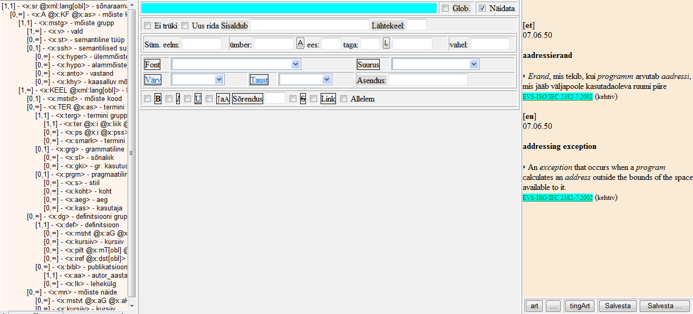

Vaate genereerimine
Sõnastikuartikli küljendatud esitust nimetatakse EELexis vaateks. Kasutaja saab sõnaartikli küljenduskuju ehk vaate ise genereerida ja soovi korral muuta. Selleks ava Toimetamisalal üks artikkel ja vali Sõnastiku tööriistad -- Vaate genereerimine. Ilmub aken Artikli vaate kujundus, mis on jaotatud kolmeks paaniks: vasakul artikli XML-struktuur (struktuuriala), keskel sätete ja tingimuste ala ning paremal küljendatud vaade (jooksva vaate ala).
-- Vaate genereerimine. Ilmub aken Artikli vaate kujundus, mis on jaotatud kolmeks paaniks: vasakul artikli XML-struktuur (struktuuriala), keskel sätete ja tingimuste ala ning paremal küljendatud vaade (jooksva vaate ala).
Elementi, mille küljendust hakkad määrama, saab aktiivseks muuta, klõpsates teda kas struktuuripuus (vasakus veerus) või küljendatud vaates (paremal). Selle peale ilmub valitud element koos kõigi tema atribuutidega, iga atribuut eraldi sinisel real.
Kui soovid näha mõnda teist artiklit, vali parempoolselt paanilt kolme punktiga nupp ... ja sisesta ilmunud aknasse soovitud artikli märksõna. Nupule tingArt vajutades näed artikli sisu asemel elementide nimesid küljendatuna. Vaade automaatselt ei uuene, vaid nupp art uuendab vaate.
Küljenduse salvestamine käib nupu Salvesta abil, akna sulgeb nupp OK vasaku paani all või ristike ülal paremas nurgas.
Iga sõnastiku jaoks on võimalik valmis teha mitut vaadet. Vaate genereerimise lehel on nupp kolme punktiga Salvesta …. Selle kaudu saab vaatevariante lisada (ja ka kustutada). Juhul, kui on rohkem kui üks genereeritud vaade, siis Sõnastiku esilehel tuleb vaateala päises nähtavale loend vaadetest, mida valida saab. Ka vaate genereerimisse minnakse selle vaatega, mis hetkel aktiivne on.
Iga elemendi jaoks saab määrata, kas kuvada ta kald-, püst- või poolpaksus kirjas, allajoonitult või mingi mustast erineva värviga, kas kuvada kirjavahemärke ja/või teksti selle elemendi ette-taha (ees ja taga) või korduvate elementide vahele (vahel), jätta ta üldse kuvamata, määrata lingiks vms.
Mõned selgitust vajavad linnukesed ja tekstiväljad:
Glob. - juhul, kui element kuulub mitmesse gruppi, siis siin linnuke määrab ta vaate kõikjal sõnastiku piires, vastasel juhul ainult valitud kohas.
Näidata - kui on linnuke, siis näidatakse seda elementi/atribuuti Vaategeneraatoris ja Sõnastiku tööakna vaatess (parempoolne ala).
Ei trüki - kui on linnuke, siis Wordki faili seda elementi/atribuuti ei trükita.
Uus rida - kui on linnuke, siis kuvab selle elemendi uuelt realt.
Sisaldub
Lähtekeel
Süm. eelm:
Sõrendus - sisesta arv, mitu punkti jääb tähtede vahele.
Allelem. -
Asendus- tekstilahtrisse kirjuta, millised elemendi väärtused millega asendada, kujul vana väärtus ~ uus väärtus püstkriips vana väärtus ~ uus väärtus püstkirips jne (näide sõnaliikide asendamise kohta: A~Adj|D~Adv|G~Ag|I~Interj|J~Konj|K~PostPrep|N~Num|O~Num|P~Pron).
Tühikuga
Tingimused vaates
Võimalik on seada vaate kuvamisele tingimusi, näiteks kuvada mingi elemendi väärtus tema mingi atribuudi mingite väärtuste korral ühtmoodi ja teiste väärtuste korral teisiti. Vaate generaatoris märgi aktiivseks muudetav element ja tee paremklikk sellel vaate sättel, mida muuta tahad (näiteks kliki parema hiireklahviga sõnal Suurus või Sõrendus). Ilmuvasse aknasse tipi X-Pathi tingimus. Vt Sõnaartikli otsimine.Kui soovid oma veebisõnastikule teistsugust vaadet kui standardvaade, siis genereeri Salvesta ... nupuga oma sõnastikule eraldi vaade ja nimeta see Veebivaateks. Näiteks pabersõnastikus võib eelistada, et vasted on teineteise järel (ruumi kokkuhoid), veebisõnastikus aga üksteise all.